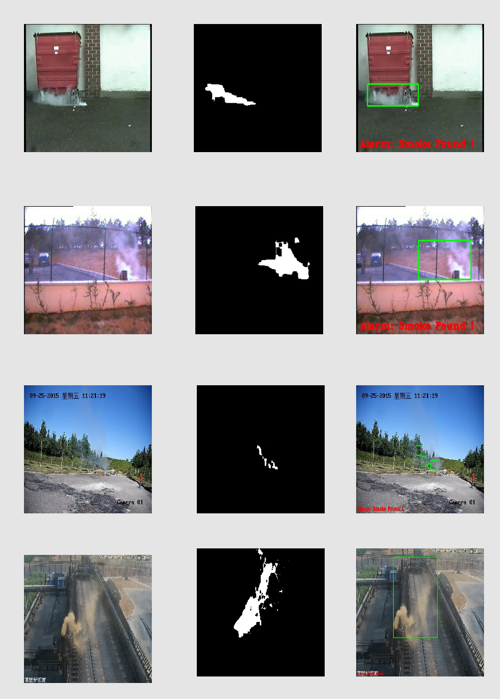

烟火识别
烟火检测是安防的重要方面，如果能在火灾发生初期就能检测到烟火，就能提前预警，将灾害降到最低。
在室内等环境中，烟火检测一般都用的是物理（光测度）和化学的（电离）方法，这也是目前的烟火报警器所广泛使用的，然而，在场景较大的场合中（比如森林大火的预警），物理和化学的方法不易使用，基于机器视觉的检测方法更加适合。
商业上已经有一些比较成熟的软件可以做烟火检测，比如 VisiFire（来自土耳其，主页有视频展示，效果很不错 )。
上一份实习中，我的主要工作就是研究烟火检测，本文将对此做一个简单的介绍（更多具体的细节因为涉及公司利益，不便透露）。
大体来讲，我们对这个问题的解决主要经历了如下两个阶段。
第一阶段 静止的观点
在这个阶段，我们主要考虑的是静止的孤立图片中的烟雾识别。
- 数据收集
通过谷歌浏览器的Fatkun Batch Download Image 插件，批量下载了一批带有烟雾和没有烟雾的图片，并从中人工筛选出了质量较高的一部分构造出训练集和测试集。
- 深度学习
我们首先想到的解决方案是基于深度学习的方法。这主要是基于如下几点考虑：
一是手动提取出比较好的特征来刻画烟雾是不容易的。手工提取特征是一件非常费力的启发式工作，需要过硬的专业知识，能不能选取好很大程度上靠经验和运气，而且它的调节需要大量的时间，而深度学习方法则不用我们去手动构建特征，而是靠算法本身实现特征的自学习。
二是以卷积神经网络为代表的深度学习方法在图像识别领域， 比如人脸识别等，是 state-of-the-art 的解决方法
三是深度学习方面有caffe, theano, torch7等一大批优秀的现成工具可用，并且这些工具都是开源的，这意味着我们可以免费使用它们而没有任何专利和授权的束缚
在确定使用深度学习方法之后，我们进而调研了上述几个工具，比较了其优劣。
torch7的优势在于构建模型简单，一层层搭积木即可，并且高度模块化，底层的tensor由C和cuda实现，速度快， 而其劣势在于，它是基于 lua 编程语言的，而我们并无 lua 的学习经历，需要新学lua，此外，lua 需要的数据文件格式比较麻烦，一般原始数据没有torch专用的t7格式文件，需要通过其他格式中转转换。theano 最大的优势在于它是基于 python 语言的，因此较为灵活，可以快速上手，而其最大的劣势也正在于它是基于 python 语言，速度相对较慢。caffe 的优势包括支持CPU和GPU，计算速度快，支持python接口，并且高度模块化，方便扩展到新的任务，而其劣势在于其依赖较多，环境配置比较麻烦。
通过比较，我们最终选择了caffe, 并用前面准备好的训练集训练出了模型。然而，模型的效果并不理想，训练过程中，精度最高时也仅有70%， 而最终的精度只有50%左右，这和随机猜测的结果差不多。通过调节学习率，批处理大小等参数，结果也并无明显改进。通过进一步了解 caffe 背后的深度学习机理，我们总结出了如下几个模型效果不理想的原因：
一是数据集不够大。 深度学习模型的好坏严重依赖训练数据集的质量和规模，人们普遍使用的数据量，通常都在上万或上百万级别，相比之下，我们收集的上千张图片并不足够。然而，从搜索引擎能够拿到的图片质量千差万别，人工筛选费时费力，筛选之后质量可用的也很难达到上万级别，此外，深度学习库对硬件资源的要求较高，数据量达到上万级别之后，我们现有的硬件远远达不到要求。
二是超参数并未调至最优。这一方面是因为我们在深度学习领域的理论积淀不足，了解的不够深入，一方面也是由于超参数的调优目前并无确定性的指导准则。由于超参数太多，且人力物力有限，我们并不能一一去尝试各种组合。
由于上述原因，我们只好决定暂时先放弃深度学习这个方向。同时，我们又有了新的思路： 既然我们的问题是给定一张图片，判断其是否含有烟雾，我们便将它看做一个二分类问题，先提取出一些常见的图片特征，再将其喂给一些现有的机器学习的分类方法去训练模型即可。
- 机器学习
首先想到的特征是色彩空间的划分。我们将图片的RGB三个通道进行划分，构造出了64维的特征向量，然后利用这些特征向量数据去训练模型。至于具体的机器学习方法，我们尝试了支持向量机（SVM），随机森林（Random Forest）以及逻辑回归(Logistic Regression)，并且发现这些方法的结果并无明显区别，精度和召回率均在75%左右。
所以，使用的机器学习方法并不是最重要的，重点还是应该放在如何去发现一些可以较好刻画烟雾的特征。
我们还尝试将RGB色彩空间替换成HSV色彩空间，但发现结果并无提升。
在此基础上，我们尝试加入了HOG(Histogram of Oriented Gradient，方向梯度直方图)特征。HOG特征是一种在计算机视觉和图像处理中广泛使用的用以进行物体检测的特征描述子，它通过计算和统计图像局部区域的梯度方向直方图来构成特征。通过选取细胞单元大小等参数，我们构造出了144维的HOG特征，并将之与前述颜色特征组合到一起。这种颜色加形状的特征描述效果十分明显，精度和召回均提升到了88%左右。
接下来，我们被要求 定位图片中的烟雾所在区域。前面我们一直将图片作为整体处理，模型只能给出是否含有烟雾的判断，但是并不能给出烟雾位置。
为了解决这个问题，我们采用了将图片切片的方法。
首先，我们将图片切割成固定大小的碎片，并通过人工筛选，从这几万张碎片中筛选出含有烟雾和不含烟雾的碎片，将其作为训练集。 接之，我们继续采用色彩空间划分和HOG特征，训练出模型。最后，对新来的图片，我们也将其切片，然后对每一个碎片做判断，如果检测出含有烟雾，便标定其位置。这样就可以大致确定烟雾的位置。
我们将这种切片后训练的模型称为局部模型，而将前述模型称为整体模型。局部模型的精度和召回率也均在85%左右。 然后，我们将局部模型和整体模型做了整合: 先用整体模型判断是否含有烟雾，如果有，再去调用局部模型确定烟雾位置。
这个阶段的代码请参考github
第二阶段 运动的观点
后来我们逐渐了解到，业务场景在于视频监控烟气排放，如果仅仅用孤立静止的图片训练模型并进行分类，我们就丢失了很多可以利用的宝贵信息， 例如， 烟火的扩散特征在静止的图像中无法体现。事实上，目前做烟雾检测的，通常都是检测视频，而不是图像，因此，其实我们一开始就应该从视频入手，而不是图片（如果一开始就确定从视频的方向入手，我们就不用花那么多时间在第一阶段的图片的处理上了，好在这一阶段中学到了很多图像处理的技术，也算不枉）。
数据收集
我们收集了一些用以烟雾检测的测试视频，这些视频场景各异，烟雾类型较多，能够较好测试烟雾的识别效果。后来也去野外自制了一些烟火视频。
求诸人
我们先是阅读了一些相关的论文，并实现了其中提到的一些方法。然而，这些方法有些并没有作者所宣称的那么好，有些方法适用的场景有限，还有一些由于涉及复杂的运算而导致单帧处理耗时较高，无法达到实时检测的需求。求诸人的尝试最终宣告失败，这逼迫我们去尝试提出自己的方法。
求诸己
那段时间，公司老大们要看效果，我们这边却毫无进展，于是心里特别焦躁。每天盯着屏幕一遍一遍地看那些烟火的视频，看烟雾升腾并扩散，看火苗闪烁由小变大，想着它们最本质的刻画特征到底何在。我确信一定有一个特别简单但也本质的特征能够刻画烟火，这一方面是因为我自己对 简单即美即实用 有坚定的信仰，另一方面也是由于 leader 的鼓励，他让我看了何凯明那篇获得 CVPR2009 最佳论文奖的经典去雾算法论文 Single Image Haze Removal Using Dark Channel Prior，论文中提出的去雾算法十分简单，同时效果奇好，我于是更加确信烟火识别这里同样如此。然后就在那段痛苦的日子中的某一天，突然的灵光一现，一个极其简单的想法从脑海里蹦出来（原谅我不能透露这个想法的细节），结合之前在论文中看到的一些观察，觉得还是有道理的，于是快速代码实现，并拿视频数据测试，惊奇地发现效果超好，至少在我们收集的视频上，都有令人满意的表现！最让人高兴的是，因为只涉及到简单的操作，我们的方法处理单帧(1280*720)的速度不到20ms，这意味着实时处理毫无压力。
这之后，我们一点一点地完善了这个想法，让它能适应更多的场景，并对一些干扰源更加鲁棒。
下图是一张效果图，左侧是原始视频帧，中间是我们的方法的一张中间结果图片，右侧是算法在原图上标记的烟火位置。

当然，我们的算法也是有缺陷的，比如，其需要一段反应积累时间，针对摄像头不固定的情形等也会失效。